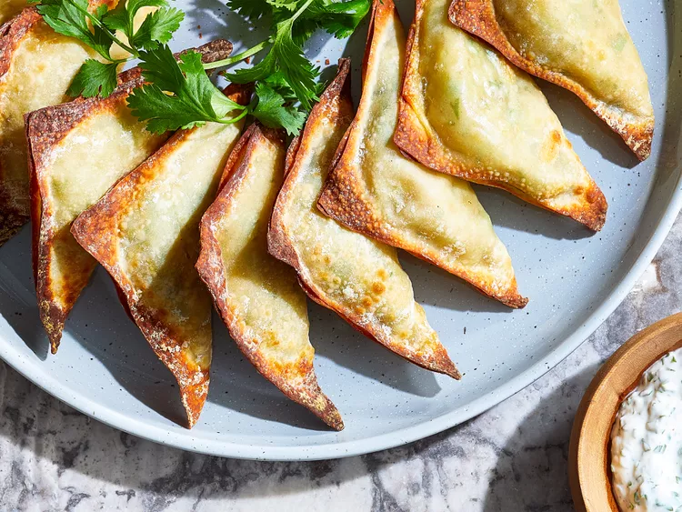

Indian Recepis
Air Fryer Samosas

my favorite style of naan. It really is incredible whether you use garlic and green onions, or not. As naan are made, they must be stacked and wrapped in a kitchen towel to keep them soft and supple.
Ingredients
- 12 ounces yukon gold potatoes, peeled and cut into 1-inch pieces
- 1 tablespoon extra-virgin olive oil
- 1/2 cup chopped onion
- 1 teaspoon grated fresh ginger
- 2 cloves garlic, minced
- 1 teaspoon garam masala
- 1/2 teaspoon cumin
- 1/4 teaspoon salt
- 1/8 teaspoon cayenne pepper (optional)
- 2/3 cup frozen peas, thawed
- 1/4 cup chopped fresh cilantro, plus more for garnish
- 24 wonton wrappers
- cooking spray
Directions
- Add potatoes to a small saucepan and cover with salted water; bring to a boil over high heat. Reduce heat and simmer 10 minutes or until fork-tender. Drain and transfer potatoes to a bowl; mash until mostly smooth with a few small chunks remaining
- In the same saucepan, heat oil over medium heat. Add onion and cook, stirring occasionally, until tender, 3 to 4 minutes. Stir in ginger and garlic; cook until fragrant, about 30 seconds. Add garam masala, cumin, salt, and (if using) cayenne; cook about 30 seconds more. Stir in mashed potatoes and peas; cook until warmed through. Remove from heat; stir in cilantro
- Arrange wonton wrappers on a clean work surface; evenly spoon filling into centers of wontonwrappers. Lightly wetborders of wrappers with water
- Fold two corners together to form triangles. Press edges to seal. Coat both sides of samosas with cooking spray. Preheat air fryer to 350 degrees F (175 degrees C). Coat air fryer basket with cooking spray. Working in batches if needed, arrange samosas in an even layer in the basket. Cook, turning once halfway through, until samosas are golden brown and crispy, about 8 minutes
- eanwhile, combine yogurt, cilantro, lime zest, lime juice; garlic, salt and pepper in a small food processor; process until well combined. Chill, covered, up to 5 days
- Serve samosas with cilantro-yogurt sauce. Garnish with additional cilantro
Green Onion Garlic Naan Bread
Ingredients
- 1 ½ cups bread flour, plus more as needed
- ½ teaspoon kosher salt
- 2 teaspoons baking powder
- 1 cup plain Greek yogurt
- 4 cloves garlic, crushed
- ½ cup thinly sliced green onions
- 2 tablespoons melted butter
Directions
- Place bread flour in a bowl. Add salt and baking powder and give it a good whisk until evenly combined.Add in Greek yogurt gently, followed by garlic and green onions. Take a wooden spoon and slowly start mixing everything together. Keep mixing, stirring, and pressing until a shaggy dough forms
- Transfer dough to a work surface and use your hands to press dough together. Knead for a few minutes until dough becomes elastic and a little bit sticky. Add a bit more flour as necessary but try to keep extra flour at an absolute minimum. Knead until dough is a little bit stretchy, 3 to 5 minutes.Wrap in plastic and allow to rest on the counter for 15 to 20 minutes
- Take a bench scraper and cut into 6 equal pieces. Take 1 portion and roll into a ball. Place onto a generously floured surface. Use a rolling pin to roll out nice and thin, about 1/8 inch or less. It's ok if the naan is not a perfect circle. You will need extra flour for rolling out as the dough is sticky, but try to use as little as possible
- Heat a cast iron skillet over medium-high heat until hot. Transfer dough circles into the hot dry skillet and cook until little bubbles form on the surface and the underside is lightly browned, about 1 minute. Flip naan over and cook for 1 more minute. Press down slightly with a spatula to increase the heat during cooking. Flip over twice more and cook for an additional 15 seconds per side, but make sure not to overcook to preserve the texture. Naan should still be flexible when you remove it from the skillet onto a plate
- Cover with a kitchen towel to keep warm and moist while you cook the other naan breads. Stack all 6 naan breads on top of each other and keep covered with a kitchen towel
- When you are finished cooking all 6 naan breads, unstack breads and brush the first naan bread on both sides with a little bit of melted butter. Stack second piece of naan on top and only brush the top side. Keep stacking and buttering all the naan breads. Fold each naan into a triangle and serve